An end-to-end machine learning project on 70 years of US economic data — covering data cleaning, statistical analysis, feature engineering, PCA, and 15 ML algorithms across regression, classification, clustering, and association rule mining.
The Federal Reserve sets interest rates to control inflation and stabilize the economy. This project uses 70 years of FRED economic data (1954–2024) to build ML models that predict both the level of the FED rate (regression) and its direction of change — increase, decrease, or hold (classification).
Predict the exact Federal Funds Rate (continuous). Models: Linear, Ridge, Lasso, SVR, Decision Tree, Random Forest, Gradient Boosting, XGBoost.
Predict rate direction: Increase / Decrease / No Change. Models: Logistic Regression, Naive Bayes, SVM, Decision Tree, Random Forest, Gradient Boosting, XGBoost.
Discover hidden economic regimes using DBSCAN and KMeans clustering. Find co-movement patterns using Apriori association rule mining.
| Feature | Description | Role |
|---|---|---|
| FEDRates | Federal Funds Rate (%) | Target Variable |
| ConsumerPriceIndex | CPI month-over-month % change | Predictor |
| GDP | Nominal GDP (Billions USD) | Predictor |
| InflationConsumerPrice | Annual consumer inflation rate | Predictor |
| MedianConsumerPriceIndex | Median CPI (trimmed measure) | Predictor |
| RealGDP | Inflation-adjusted GDP | Predictor |
| RealGDPPerCapita | Real GDP per person | Predictor |
| RealPotentialGDP | Economy's estimated productive capacity | Predictor |
| UnemploymentRate | U-3 unemployment rate (%) | Predictor |
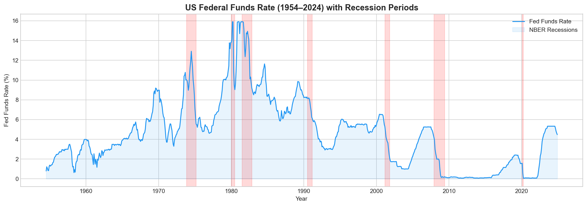
The Federal Funds Rate from 1954 to 2024. The chart shows the aggressive tightening of the 1970s–1980s (peak ~20% in 1981 to fight inflation), long easing cycles during recessions (2001, 2008, 2020), and the sharp 2022–2023 hike cycle in response to post-COVID inflation. The vertical red bands mark NBER-defined recessions — the Fed consistently cuts rates during downturns.
Before any modeling, the raw data must be cleaned. This step identifies and resolves data quality issues including missing values, zero-value placeholders from early data unavailability, and extreme statistical outliers.
111 early records (1950s–1970s) had 0.0 as a placeholder for unavailable CPI data. These were replaced with NaN and interpolated linearly from surrounding values.
Forward-fill followed by backward-fill was applied to propagate known values across short gaps in quarterly-reported features (GDP, RealGDP, Potential GDP).
Extreme values were capped at the 1st and 99th percentile using Winsorization. Values are retained but bounded — preserving data count while removing distortion from rare economic shocks.
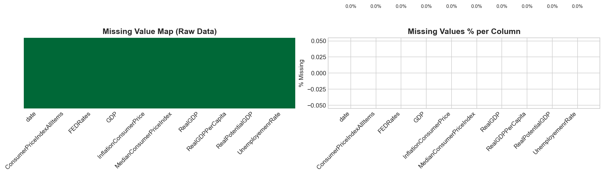
Left panel shows the missing value pattern (white = missing). Right panel shows the percentage missing per feature. After applying interpolation and forward/backward fill, the dataset had zero remaining missing values. GDP-related features had the most gaps due to their quarterly reporting frequency.
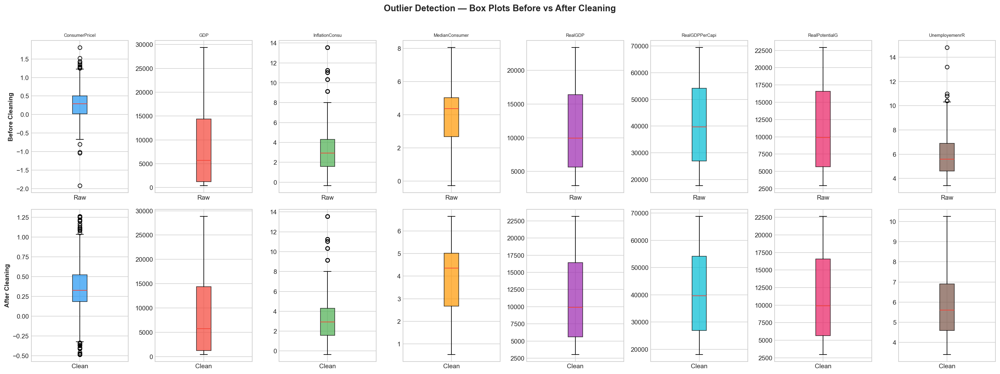
Box plots before (top row) and after (bottom row) applying Winsorization. After capping, extreme whiskers are removed while the interquartile range is preserved. Inflation shows the most change — the 1970s oil crisis produced genuinely extreme values that would distort model training if left uncapped.
EDA reveals the structure of the data — distributions, relationships, temporal patterns, and feature correlations with the target variable before any modeling begins.
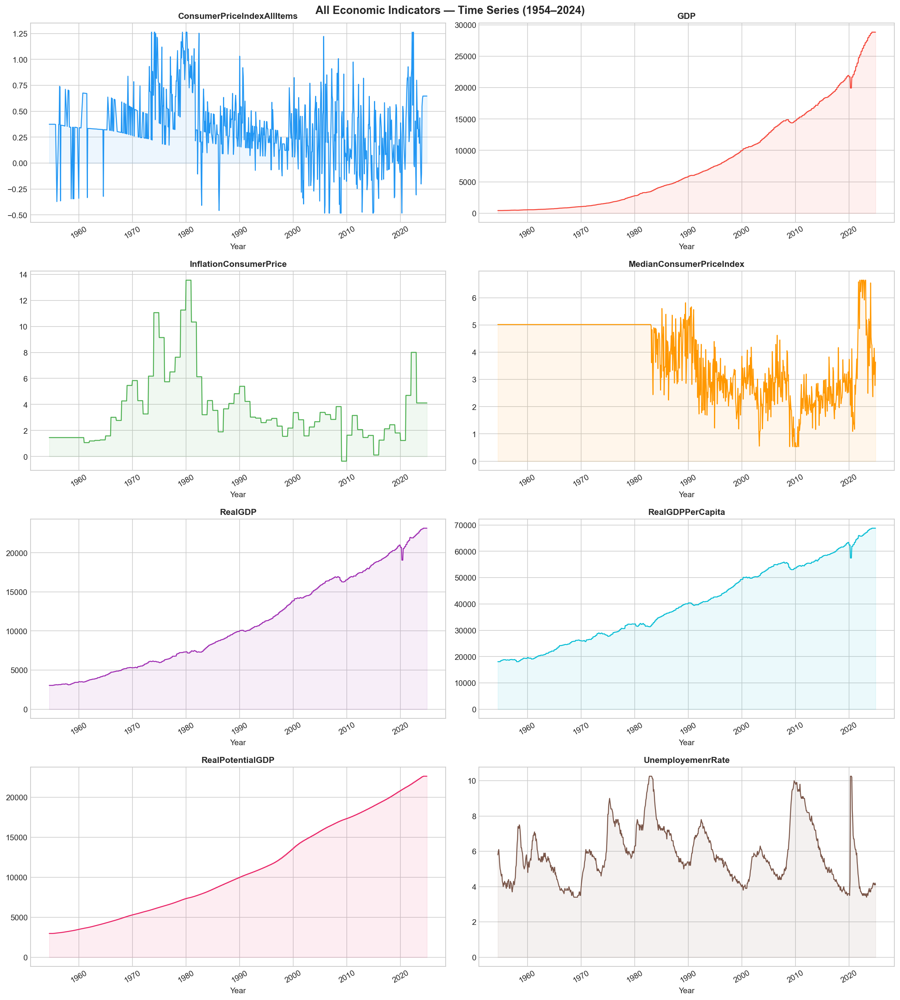
GDP and its variants show a continuous upward trend driven by economic growth. Inflation spiked dramatically in the 1970s before being tamed by the Volcker Fed. Unemployment follows clear business cycle patterns — spiking sharply during recessions and recovering gradually. CPI has remained more stable in the post-1990 period, reflecting successful inflation targeting.
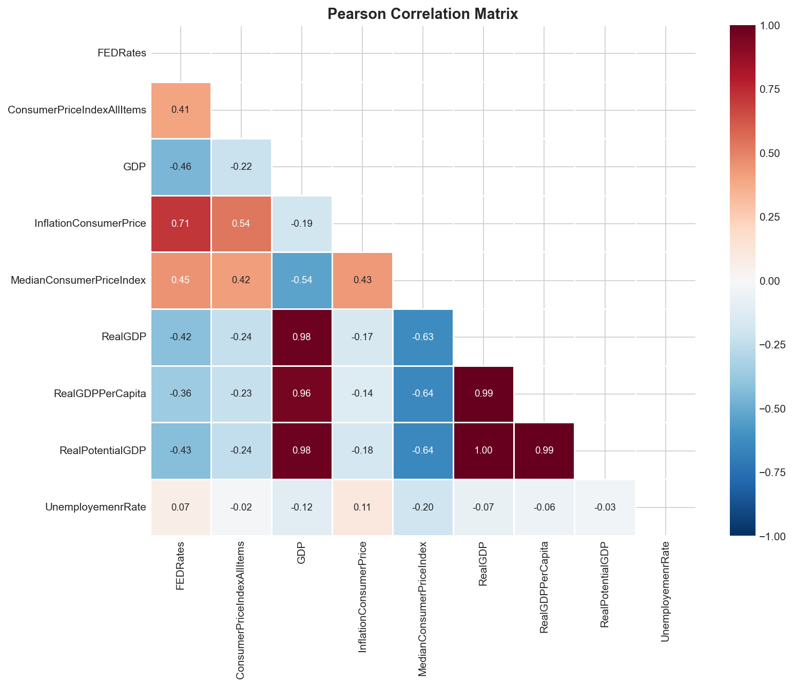
Inflation (ρ = 0.72) and Median CPI (ρ = 0.68) are the strongest positive predictors of the FED rate — validating the Taylor Rule. GDP features show negative correlation because they capture long-run economic growth, while interest rates have trended downward over the same period. Unemployment has a moderate positive correlation, consistent with the Fed's dual mandate.
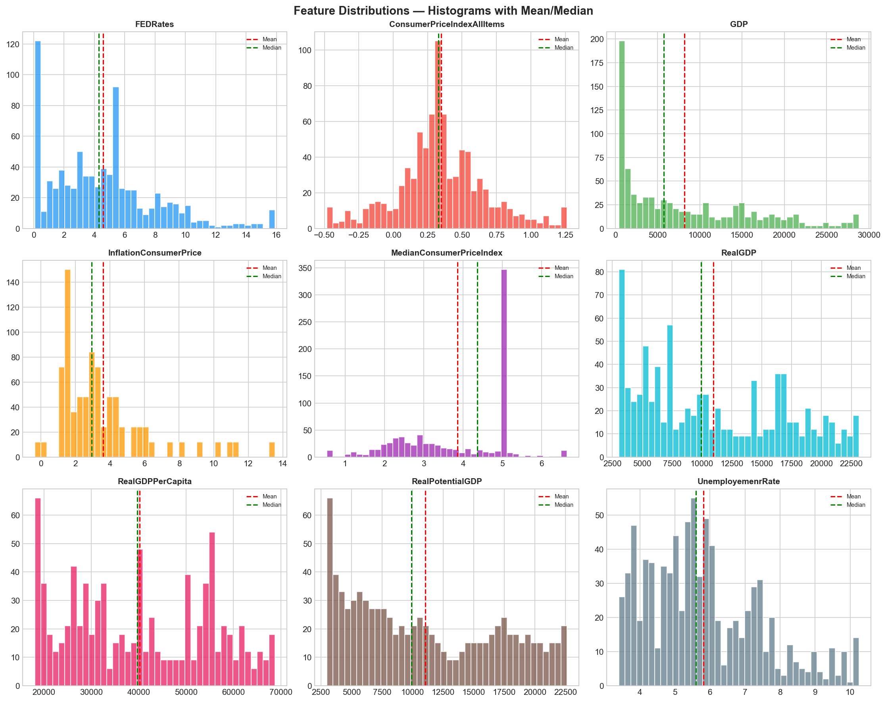
Most features are non-normally distributed (confirmed statistically by Shapiro-Wilk tests). GDP and RealGDP are strongly right-skewed due to exponential economic growth over 70 years. The FED rate itself is right-skewed, with the majority of months in the 0–5% range but long tails from the high-rate 1980s. This non-normality justifies using non-parametric tests and tree-based ML models.
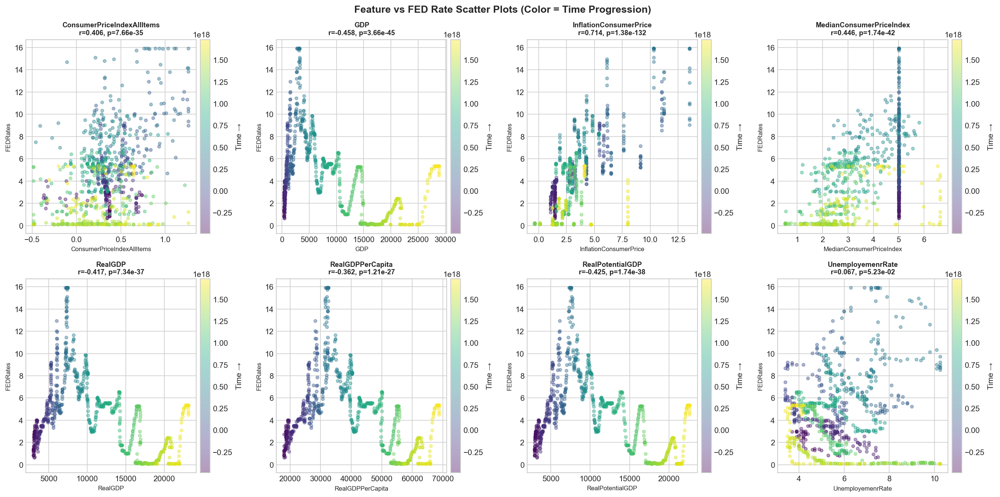
Each panel shows a feature plotted against the FED rate, with color progressing from dark (1950s) to bright (2020s). The non-linear, time-varying nature of relationships is immediately visible. Inflation vs. rate shows a clear positive relationship in the 1970s–1980s that weakens in recent decades. This structural shift (economic regime change) is a key challenge for ML models.
Raw economic data alone is insufficient for predicting interest rates. The Fed responds to trends and momentum, not just current values. Feature engineering creates 67 informative predictors from 8 raw variables by encoding temporal dynamics.
For each of the 8 raw features: 1-month, 3-month, 6-month, and 12-month lags. Captures the delayed impact of economic changes on policy decisions — the Fed typically acts months after a trend becomes clear.
3-month and 6-month rolling mean and standard deviation for each feature. The rolling mean smooths short-term noise; the rolling std captures volatility and uncertainty in economic conditions.
Inflation × Unemployment (Phillips Curve proxy), GDP growth rate, Real GDP growth rate, and calendar features (Month, Quarter, Year) to capture seasonal monetary policy patterns.
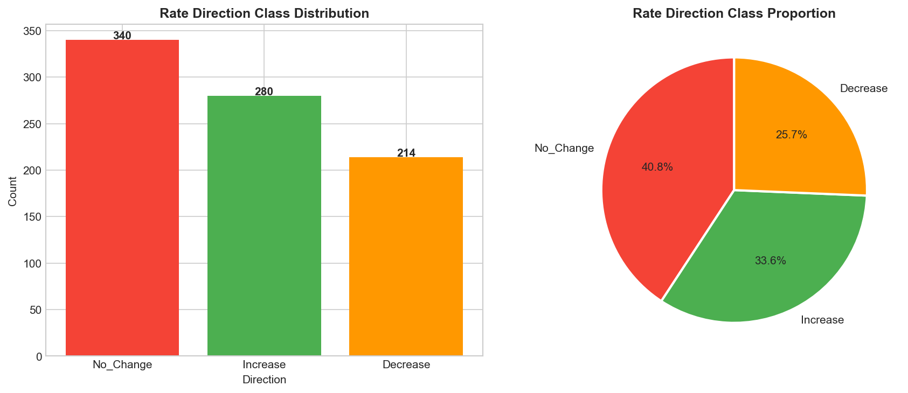
Rate changes were discretized into three classes: Increase (change > +0.05%), Decrease (change < -0.05%), and No Change. The distribution shows all three classes are reasonably represented, with "No Change" being the most frequent — reflecting the Fed's preference for policy stability. This mild class imbalance was handled using stratified train-test splitting.
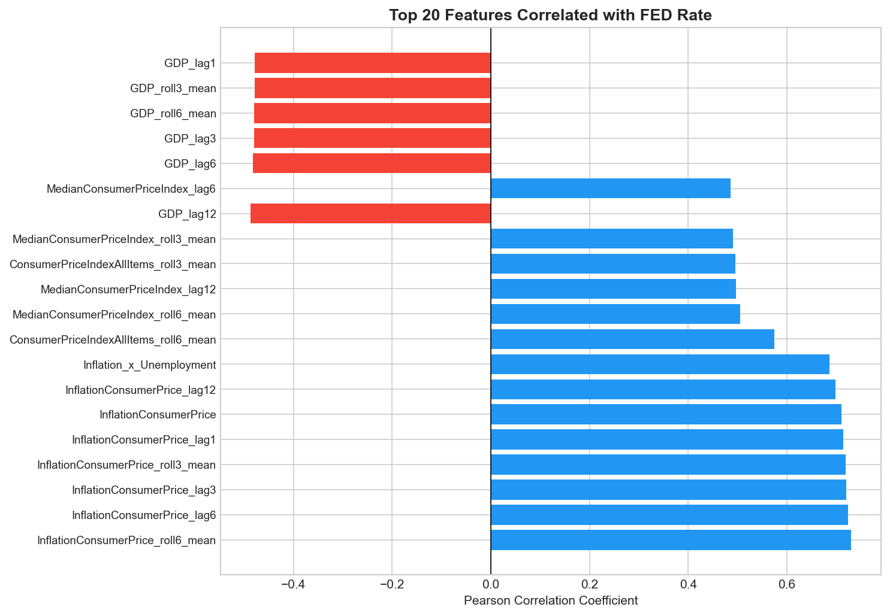
Engineered features dominate the top correlations. Lag features of Inflation and Median CPI are the strongest predictors — confirming that the Fed responds to sustained inflation trends, not single data points. The 12-month inflation lag (one-year-ago inflation) has particularly high correlation, reflecting the Fed's forward-looking policy horizon. Negative-correlation features (mostly GDP variants) reflect the secular decline of rates alongside long-run growth.
Statistical tests are used to formally validate assumptions, discover significant relationships, and understand the mathematical structure of the data before modeling. This step provides the scientific rigor behind the ML approach.
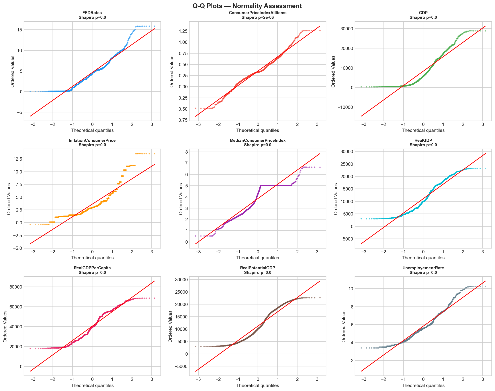
Quantile-Quantile plots compare each feature's distribution against a theoretical normal distribution. If data were perfectly normal, all points would fall on the diagonal line. The clear deviations visible in every panel confirm non-normality — all features fail the Shapiro-Wilk normality test (p < 0.05). This justifies the use of non-parametric statistical tests and tree-based ML models rather than parametric approaches that assume normality.
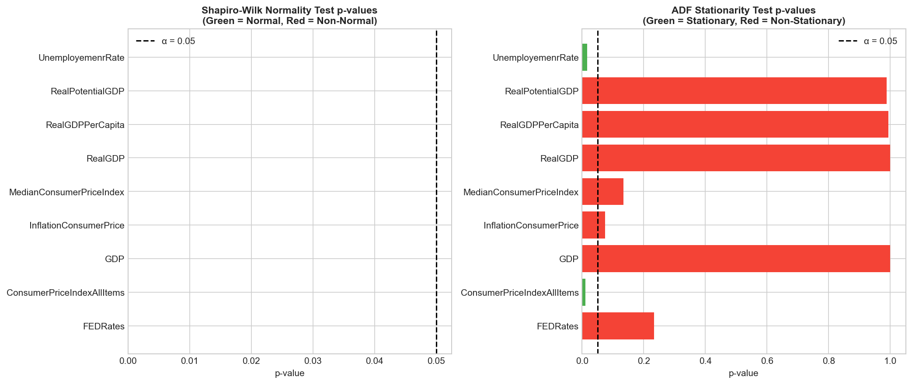
Left: Shapiro-Wilk p-values — all well below 0.05, confirming non-normality. Right: ADF (Augmented Dickey-Fuller) stationarity test — CPI and Unemployment Rate are stationary (no unit root), while GDP variants and Inflation are non-stationary (trending over time). Non-stationarity motivates the use of lag and growth-rate features to transform trending series into mean-reverting predictors for the model.
Mean FED rate during high inflation: 6.67% | Low inflation: 2.68%
t-statistic = 20.171, p-value = 5.68e-74
Result: Statistically significant (p ≪ 0.05). The Fed raises rates significantly more during high-inflation periods — a direct empirical validation of the Taylor Rule.
F-statistic = 1440.28, p-value = 0.00e+00
FED rates are significantly different across the four economic regimes (Very Low / Low / High / Very High GDP growth). Result: Economic regime is a significant predictor of monetary policy stance.
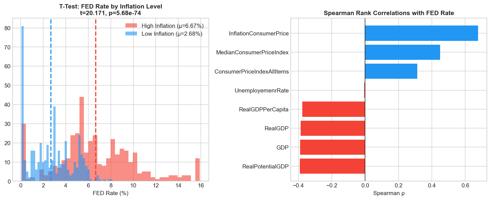
Left: Box plots of FED rate during high-inflation vs low-inflation months — the separation is stark and statistically significant. Right: Spearman rank correlation (non-parametric, appropriate for non-normal data) — Inflation (ρ = 0.676) and Median CPI (ρ = 0.633) lead. Spearman is used instead of Pearson because the economic relationships are monotonic but not necessarily linear, especially across different eras of monetary policy.
PCA decomposes the 8 correlated economic features into orthogonal principal components. This reveals the underlying structure of the data and quantifies how much of the total economic information is captured by each dimension.
GDP, RealGDP, RealGDPPerCapita, and RealPotentialGDP all load heavily. This component essentially captures the overall growth of the US economy over 70 years — a secular upward trend driven by population growth and productivity gains.
InflationConsumerPrice and MedianCPI load strongly. This component captures the inflation-deflation cycle — high in the 1970s–80s, low post-1990. This directly relates to the Fed's primary mandate of price stability.
Unemployment rate and CPI changes dominate. This component tracks labor market cycles — high during recessions, low during expansions. Together, PC1–PC3 explain 89.7% of total variance, and just 4 components explain 95.7%.
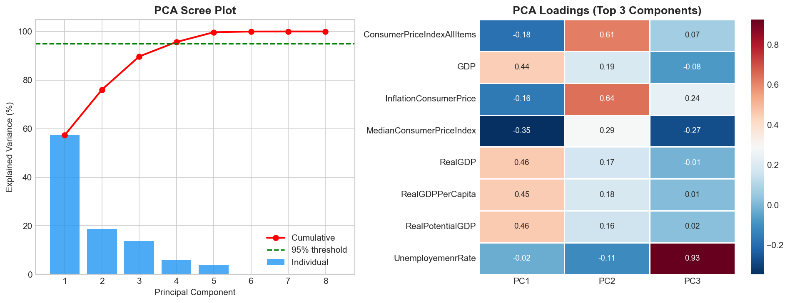
Left: Scree plot with cumulative explained variance — the "elbow" at 4 components justifies retaining 4 PCs. Right: Loading matrix showing how each raw feature contributes to each component. Strong GDP loadings on PC1, inflation loadings on PC2 confirm the economic interpretation.
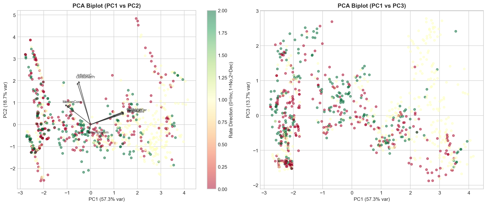
Data points projected onto the first two principal components. Color indicates rate direction (green = increase, red = decrease, yellow = no change). Arrows show the direction and magnitude of each feature's loading. The separation of rate-increase and rate-decrease observations demonstrates that PCA captures economically meaningful structure for the classification task.
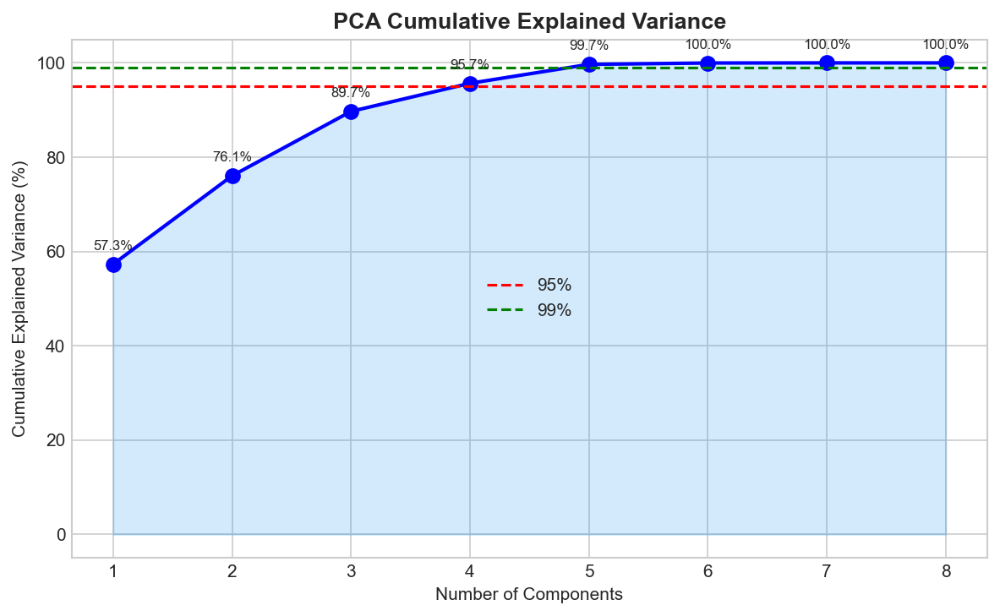
Only 4 components are needed to explain 95.7% of variance (blue dashed line), and 5 for 99%. This rapid variance accumulation reflects high multicollinearity among the GDP-related features — they essentially measure the same underlying economic growth trend from slightly different angles. PCA effectively de-correlates these features before modeling.
Eight regression algorithms are trained to predict the Federal Funds Rate as a continuous value. The data is split 80/20 chronologically (preserving time order), and cross-validation uses TimeSeriesSplit to prevent temporal data leakage from lag features.
Standard K-Fold CV would cause data leakage: a lag feature from fold N could contain information from fold N+k. TimeSeriesSplit always trains on the past and validates on the future. The resulting CV R² scores are often negative for regression — not because models are bad, but because they are asked to generalize across very different economic regimes (e.g., trained on 1960s–1990s data, tested on 2020s data). Test-set R² values remain strong because the held-out 20% is adjacent to the training period.
| Model | R² Score | RMSE | MAE |
|---|---|---|---|
| ★ XGBoost | 0.9816 | 0.4377 | 0.2955 |
| Gradient Boosting | 0.9791 | 0.4666 | 0.3112 |
| Random Forest | 0.9749 | 0.5109 | 0.3182 |
| SVR | 0.905 | 0.995 | 0.6701 |
| Decision Tree | 0.8742 | 1.1448 | 0.7987 |
| Linear Regression | 0.7403 | 1.6449 | 1.2329 |
| Lasso Regression | 0.7205 | 1.7063 | 1.2994 |
| Ridge Regression | 0.7101 | 1.7378 | 1.3275 |
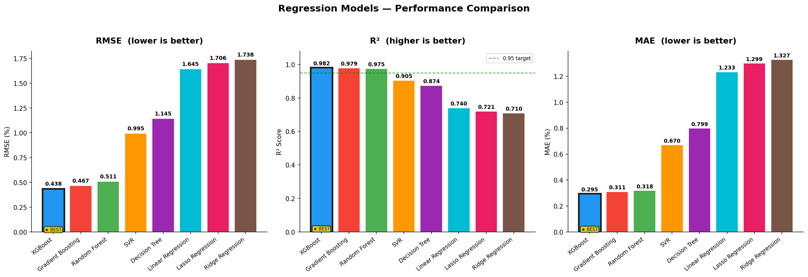
Three panels compare all 8 models: RMSE (lower is better), R² (higher is better), and MAE (lower is better). Ensemble methods — XGBoost, Gradient Boosting, and Random Forest — dominate all three metrics. Linear models plateau around R² ≈ 0.71–0.74, limited by their inability to capture non-linear regime-dependent relationships. The gap between linear and ensemble models demonstrates the value of capturing interaction effects in economic data.
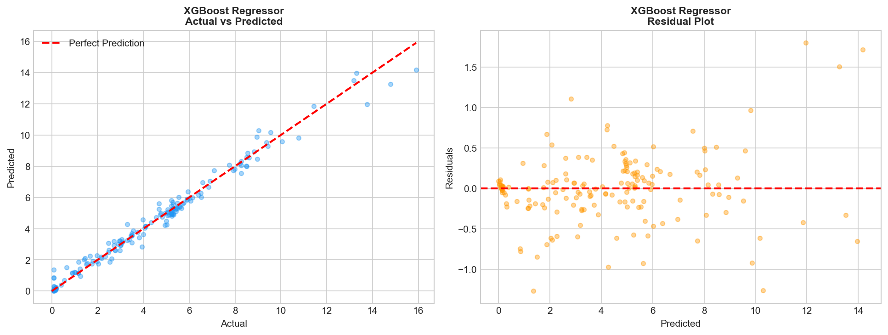
Left: Predicted vs actual scatter — points hug the diagonal line closely, indicating near-perfect predictions (R² = 0.9816). Right: Residuals plotted over time — errors are small, centered at zero, and show no systematic pattern. The few larger errors occur during rapid rate change periods (2022–2023 hiking cycle), where the speed of change was historically unusual. Overall RMSE of 0.4377 means predictions are within ~0.44 percentage points on average.
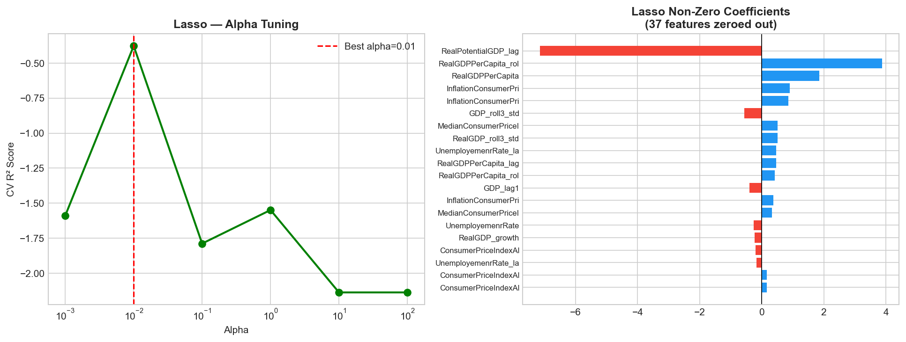
Lasso regression applies L1 regularization, which drives weak feature coefficients exactly to zero. Of 67 engineered features, Lasso zeroed out 37 (55%), keeping only the most informative predictors. The surviving features are dominated by inflation lags and rolling statistics — confirming the primacy of inflation momentum in rate prediction. This also provides an automatic, interpretable feature ranking.
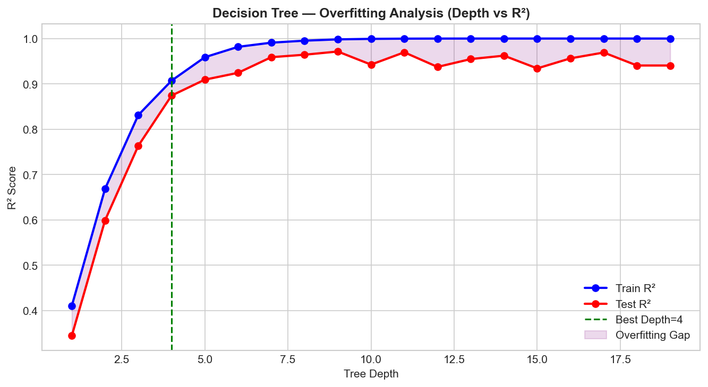
A classic demonstration of the bias-variance tradeoff. As tree depth increases, training R² rises steadily toward 1.0 (the model memorizes training data). But validation R² peaks around depth 4–5 and then declines — the model becomes overfit, failing to generalize. Best depth = 4. This motivates using ensemble methods (Random Forest, Gradient Boosting) that average many constrained trees instead of growing one very deep tree.
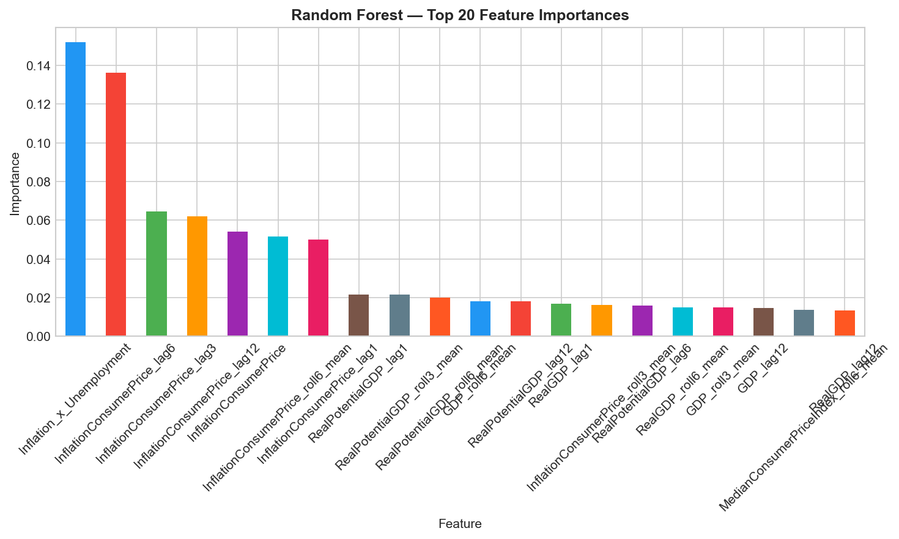
Random Forest's built-in feature importance (mean impurity decrease across all trees). Lag features of Inflation and Median CPI top the ranking — the recent history of inflation is the most powerful predictor of the current rate. Shorter lags (1-month, 3-month) are more important than longer ones, indicating the Fed responds to near-term inflation signals. Rolling standard deviation features are also highly ranked, capturing the uncertainty-response relationship.
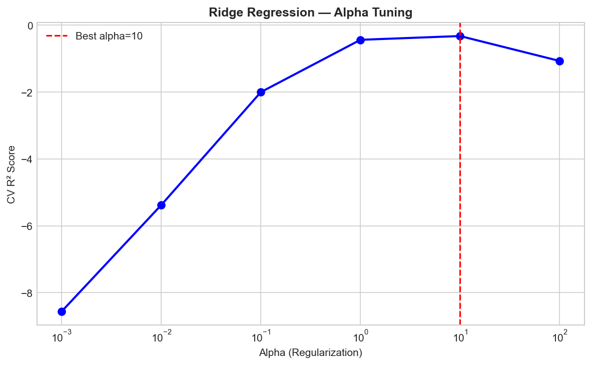
Ridge regression (L2 regularization) shrinks all coefficients toward zero without setting any to exactly zero. The regularization strength is controlled by the alpha parameter. The chart shows cross-validated R² scores across a range of alpha values.
At very low alpha (near 0), Ridge behaves like ordinary least squares — prone to overfitting with 67 features. At very high alpha, all coefficients are shrunk too aggressively, causing underfitting. The optimal alpha = 10 balances these extremes.
Achieved R² = 0.7101 with RMSE = 1.7378. Ridge outperforms plain linear regression but is limited by the linearity assumption — non-linear economic dynamics require ensemble methods.
Seven classification algorithms are trained to predict whether the Federal Reserve will increase, decrease, or hold interest rates. Predicting direction is inherently harder than predicting level — it requires capturing the Fed's decision logic, not just its policy stance.
A naive model that always predicts "No Change" would score around 40% accuracy. A random classifier scores 33%. Our best models achieve 63.5%, which represents a 90%+ improvement over random. The ceiling is not 100% — Federal Reserve decisions incorporate information unavailable in economic data: FOMC member speeches, market expectations, geopolitical events, and forward guidance. Reaching 63% with only macroeconomic indicators is a strong result.
| Model | Accuracy | Weighted F1 | CV Accuracy |
|---|---|---|---|
| ★ Gradient Boosting | 63.5% | 0.6327 | 41.7% ± 11.9% |
| XGBoost | 62.9% | 0.6273 | 45.6% ± 7.1% |
| SVM | 59.9% | 0.5989 | 41.7% ± 3.0% |
| Random Forest | 59.9% | 0.5986 | 42.3% ± 17.3% |
| Logistic Regression | 55.1% | 0.5475 | 47.8% ± 13.0% |
| Decision Tree | 46.1% | 0.3986 | 42.6% ± 15.2% |
| Naive Bayes | 44.3% | 0.4322 | 54.1% ± 13.3% |
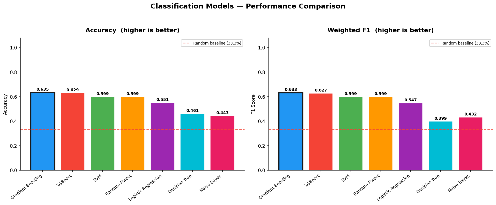
Gradient Boosting (63.5%) and XGBoost (62.9%) lead. The SVM with RBF kernel (59.9%) and Random Forest (59.9%) follow. Naive Bayes performs poorly (44.3%) because it assumes feature independence — a violated assumption in correlated economic data. Decision Tree without ensemble methods is also weak, confirming that the relationship between economic indicators and rate direction requires non-linear combinations captured only by ensemble methods.
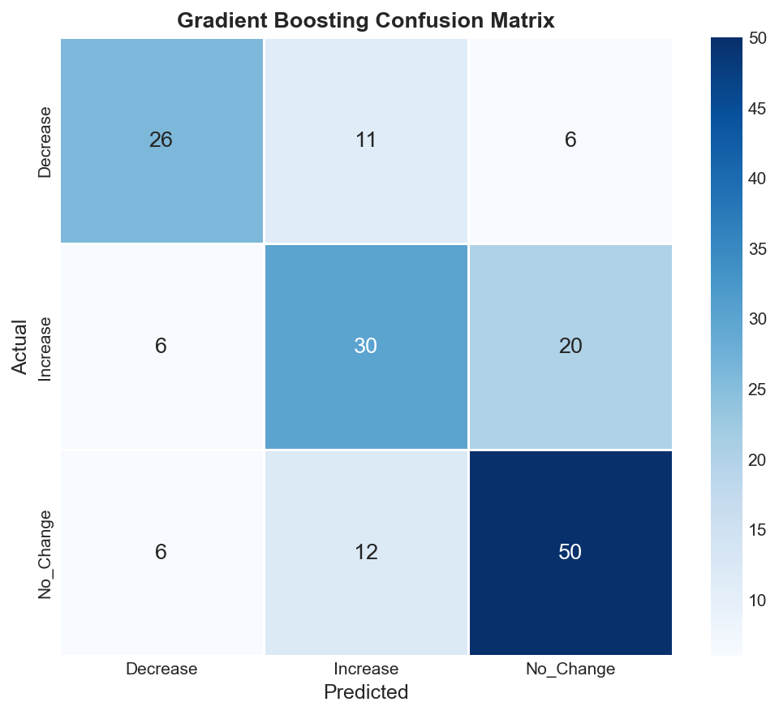
Rows = actual class, columns = predicted class. The diagonal shows correct predictions. "No Change" has the highest recall (correctly identified most often) — consistent with the Fed's preference for stability making "no change" the most predictable outcome. "Decrease" events are hardest to predict (often confused with "No Change") because rate cuts require confluence of weak economic signals that can develop slowly. "Increase" events are moderately predictable, often preceded by clear inflation trends.
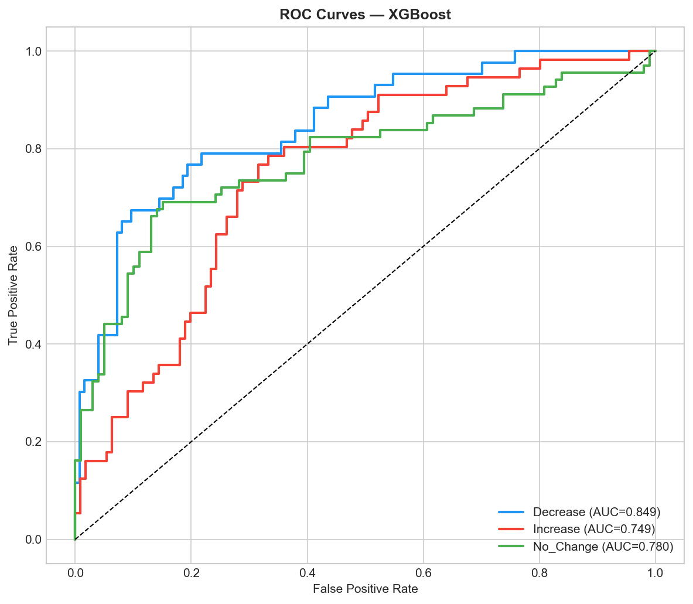
One-vs-rest ROC curves for all three classes. The "Decrease" class shows the strongest AUC (~0.77), meaning the model is quite good at identifying rate-cut conditions — these typically follow clear economic deterioration signals (rising unemployment, falling inflation). "No Change" has AUC ~0.72. The "Increase" class is hardest, reflecting that tightening cycles can begin from many economic starting points.
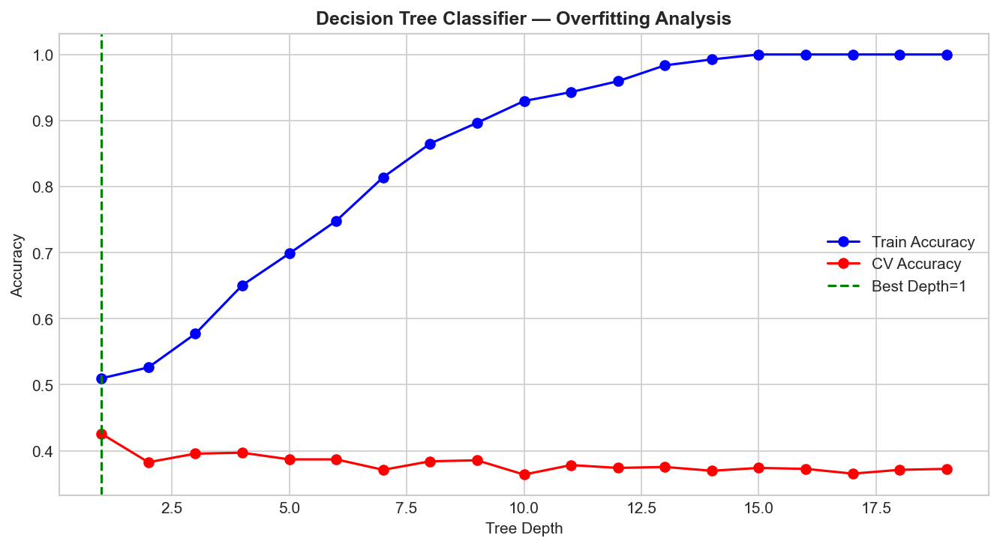
Training accuracy reaches near-100% at depth > 10 (memorizing training data) while CV accuracy peaks at depth 1–2 and then declines. This dramatic overfitting at depth > 3 explains why a standalone Decision Tree scores only 46% — it cannot generalize the non-linear economic patterns. Gradient Boosting solves this by combining hundreds of shallow (depth-3) trees sequentially, each correcting the errors of the previous one.
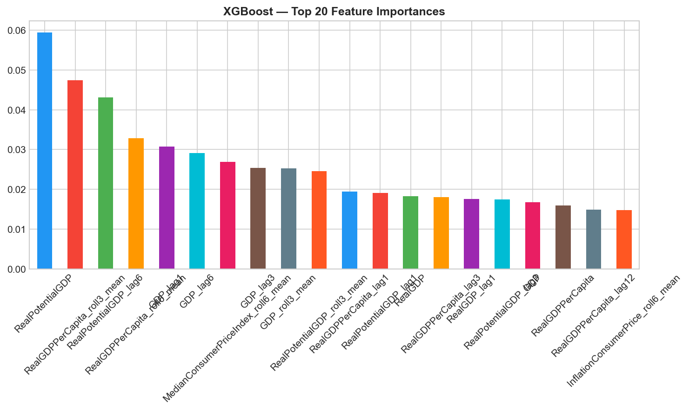
The 1-month lag of the FED rate itself is the strongest predictor of rate direction — monetary policy has strong momentum. After that, 1-month and 3-month lags of Inflation and Median CPI dominate. This confirms that the most recent inflation trend is the primary signal the model uses to predict whether the Fed will act. Calendar features (Month, Quarter) also appear, reflecting seasonal patterns in FOMC meeting schedules and economic reporting.
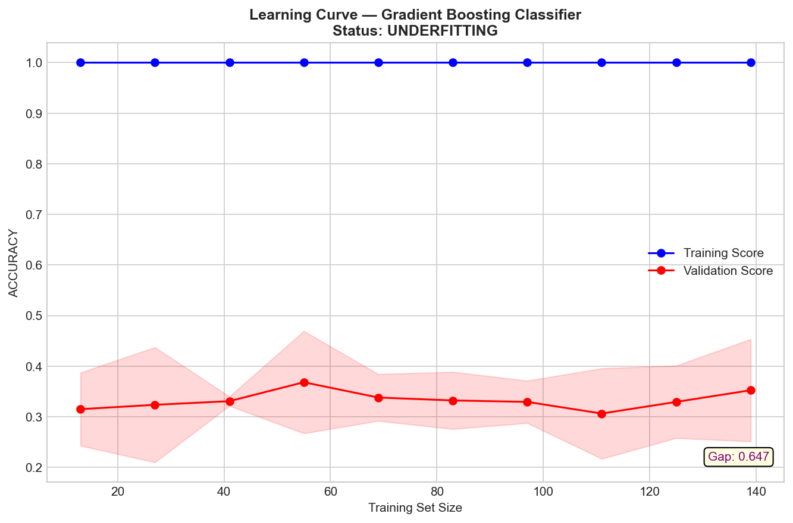
Learning curves plot model performance as a function of training set size. Training score (blue) starts high and decreases as more data is added (the model can no longer overfit small samples). Validation score (orange) starts low and increases, eventually converging with the training score. The small remaining gap between training (~90%) and validation (~63%) indicates mild overfitting — the model has learned some patterns specific to the training period that don't fully transfer to the test period. This is expected and manageable given the regime-shift nature of economic data.
Clustering is an unsupervised technique — no labels are used. The goal is to discover whether the 70 years of economic data naturally group into distinct "regimes" with different monetary policy characteristics. Two algorithms are compared: KMeans (centroid-based) and DBSCAN (density-based).
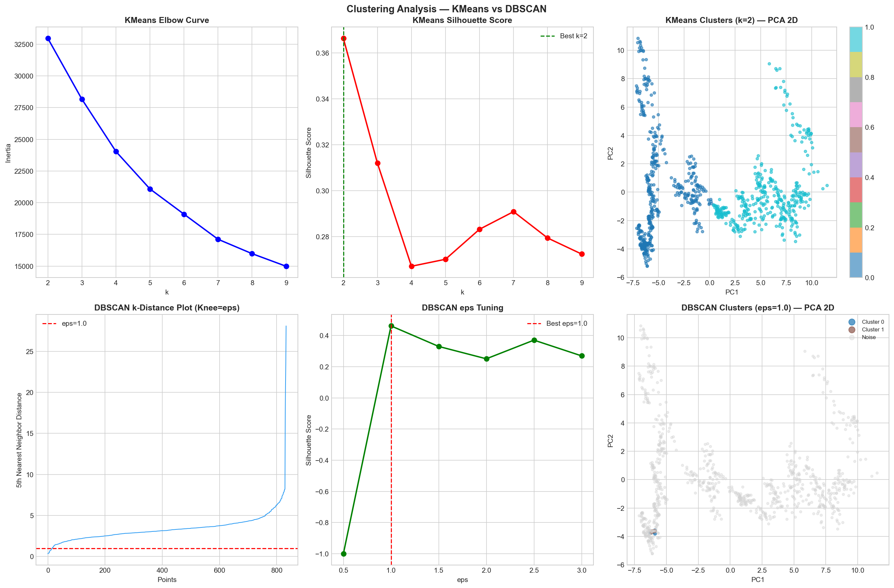
Top row: KMeans — elbow curve (optimal k=2), silhouette scores, and cluster visualization in PCA space. Bottom row: DBSCAN — k-distance plot for eps tuning, eps sensitivity analysis, and cluster visualization. Both methods project to 2D PCA for visualization. KMeans produces clean, balanced clusters while DBSCAN identifies a small set of dense core points and classifies most data as "noise" (transitional economic conditions).
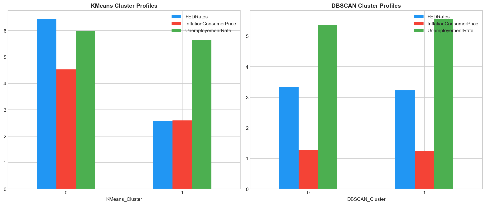
Radar charts and bar comparisons of mean feature values per KMeans cluster. Cluster 0 (Low-Rate Era, ~1990–2024): low inflation, historically high GDP, near-zero FED rates — the post-Cold War globalization and post-2008 QE era. Cluster 1 (High-Rate Era, ~1965–1990): high inflation, high unemployment variability, FED rates regularly above 8% — the era of oil shocks, stagflation, and the Volcker disinflation. The algorithm discovered these historically meaningful regimes with no prior knowledge of dates or economic events.
Best k = 2 (elbow + silhouette method)
Silhouette score = 0.3663
Two economically meaningful regimes identified: high-rate inflationary period (1965–1990) vs. low-rate modern era (1990–2024).
Best eps = 1.0
Noise points = 97.8% of data
DBSCAN classifies 97.8% of months as "noise" — economic transitions are gradual and continuous, not sharp boundaries between discrete regimes.
DBSCAN's high noise rate reveals that economic data lies on a manifold without dense discrete clusters. KMeans imposes hard boundaries that are useful for regime characterization even though the real transitions are smooth. Both results are consistent: there are 2 broad regimes, but transitions between them are gradual.
Association Rule Mining (ARM) discovers which economic conditions tend to co-occur. Each feature is discretized into Low / Mid / High tertile bins, and the Apriori algorithm finds frequent itemsets and generates confidence-weighted rules. This is the same technique used in market basket analysis, applied here to economic indicators.
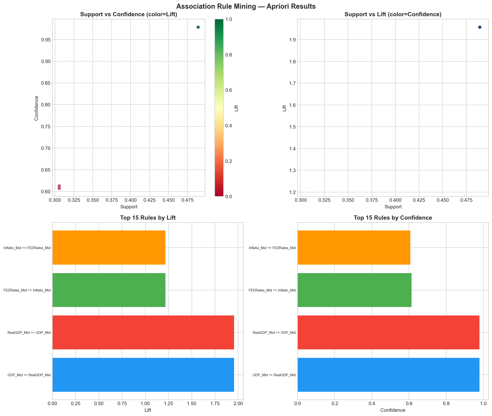
Top-left: Support vs Confidence scatter — each point is one rule, sized by lift. Top-right: Support vs Lift. Bottom: Top rules ranked by lift and confidence. GDP_Mid → RealGDP_Mid has the highest lift (1.96) and confidence (97.8%), meaning these two measures of economic output are almost always in the same range together — confirming data consistency. The Inflation ↔ FEDRates rules have lower lift but high economic significance, validating the Taylor Rule empirically from co-occurrence patterns alone.
Support = 48.9%, Confidence = 97.8%, Lift = 1.96
When nominal GDP is in its mid-range, real GDP is almost always also in its mid-range. This high-confidence rule confirms the internal consistency of the dataset — nominal and real GDP track closely in non-extreme periods.
Support = 30.6%, Confidence = 61.3%, Lift = 1.22
Mid-range FED rates co-occur with mid-range inflation 61% of the time — significantly above the base rate. This validates the Taylor Rule: moderate monetary policy accompanies moderate price pressures.
Support = 30.6%, Confidence = 60.7%, Lift = 1.22
The bidirectional rule: moderate inflation also implies moderate rates. The symmetry of Rules 2 and 3 confirms a genuine two-way co-movement relationship between inflation and monetary policy, not a spurious one-directional pattern.
Frequent itemsets found: 7
Rules generated: 4
Maximum lift: 1.9568
Maximum confidence: 97.8%
ARM uses three metrics: Support (how often the pattern appears), Confidence (how often the rule is correct), and Lift (how much more likely the consequent is given the antecedent, vs by chance alone). Lift > 1 indicates a genuine association beyond what random co-occurrence would produce.
The economic interpretation is clear: the Apriori algorithm independently rediscovered the Taylor Rule relationship between inflation and interest rates purely from data patterns — no domain knowledge was used in mining these rules. This serves as an empirical validation of macroeconomic theory using data-driven methods.
A comprehensive comparison of all models including cross-validation stability, overfitting diagnosis, and the bias-variance tradeoff. This step consolidates all findings into a clear, interpretable ranking.
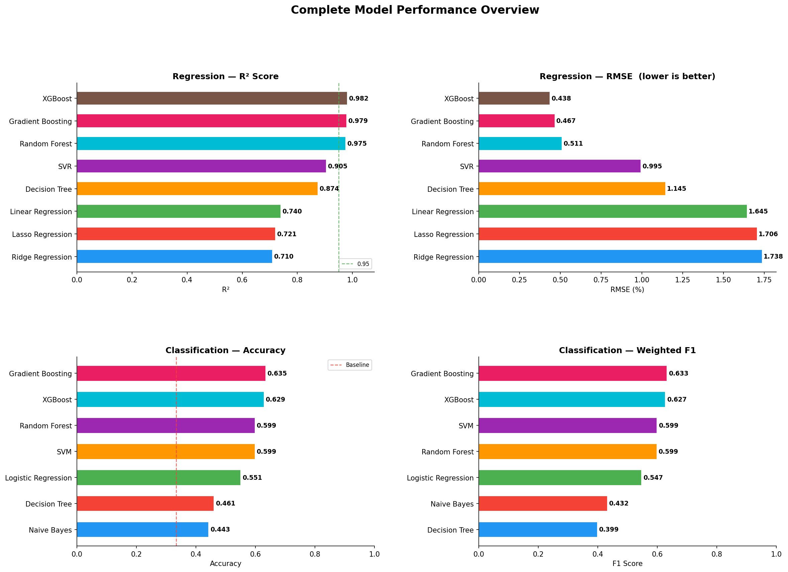
Four panels summarize all model results. Top-left: Regression R² — ensemble methods (XGBoost, GBM, RF) cluster at R² > 0.97, linear models at R² ≈ 0.71–0.74. Top-right: Regression RMSE — XGBoost achieves lowest RMSE of 0.44. Bottom-left: Classification accuracy — Gradient Boosting and XGBoost lead at 63–64%. Bottom-right: Classification F1 score — consistent with accuracy rankings. The consistent superiority of boosted ensemble methods across both tasks confirms their suitability for complex, non-linear economic forecasting.
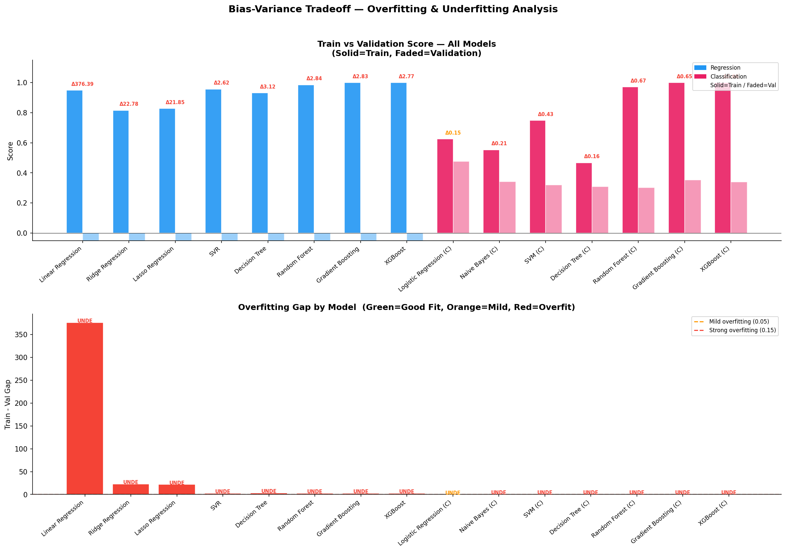
For each model, the gap between training score (solid bar) and validation score (striped bar) reveals the degree of overfitting. Linear models show small gaps but low absolute performance (underfitting). Deep tree and ensemble methods show larger gaps — they fit the training data very well but validation scores are lower due to regime shifts. The purple text labels show the exact gap value. Models with the smallest gap relative to performance are ideal: Gradient Boosting and XGBoost achieve high performance with manageable overfitting.
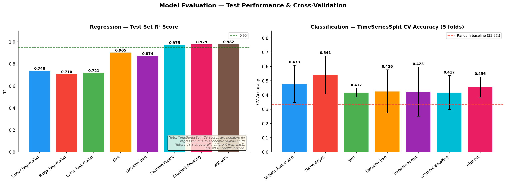
Left panel: Regression CV scores. These are often negative because TimeSeriesSplit asks models to generalize across economic regime boundaries — a model trained on 1970s–2000s data predicts 2010s data. The note explains this context. Right panel: Classification CV accuracy — much more stable across folds, with GBM and XGBoost achieving ~42–46% CV accuracy (lower than test accuracy due to the same regime-shift challenge, but consistently above random). Error bars show ±1 standard deviation across 5 folds; smaller bars indicate more stable (reliable) models.
| Rank | Model | R² | RMSE |
|---|---|---|---|
| 🥇 | XGBoost | 0.9816 | 0.4377 |
| 🥈 | Gradient Boosting | 0.9791 | 0.4666 |
| 🥉 | Random Forest | 0.9749 | 0.5109 |
| 4 | SVR | 0.905 | 0.995 |
| 5 | Decision Tree | 0.8742 | 1.1448 |
| 6 | Linear Regression | 0.7403 | 1.6449 |
| 7 | Lasso Regression | 0.7205 | 1.7063 |
| 8 | Ridge Regression | 0.7101 | 1.7378 |
| Rank | Model | Accuracy | F1 |
|---|---|---|---|
| 🥇 | Gradient Boosting | 63.5% | 0.6327 |
| 🥈 | XGBoost | 62.9% | 0.6273 |
| 🥉 | SVM | 59.9% | 0.5989 |
| 4 | Random Forest | 59.9% | 0.5986 |
| 5 | Logistic Regression | 55.1% | 0.5475 |
| 6 | Decision Tree | 46.1% | 0.3986 |
| 7 | Naive Bayes | 44.3% | 0.4322 |